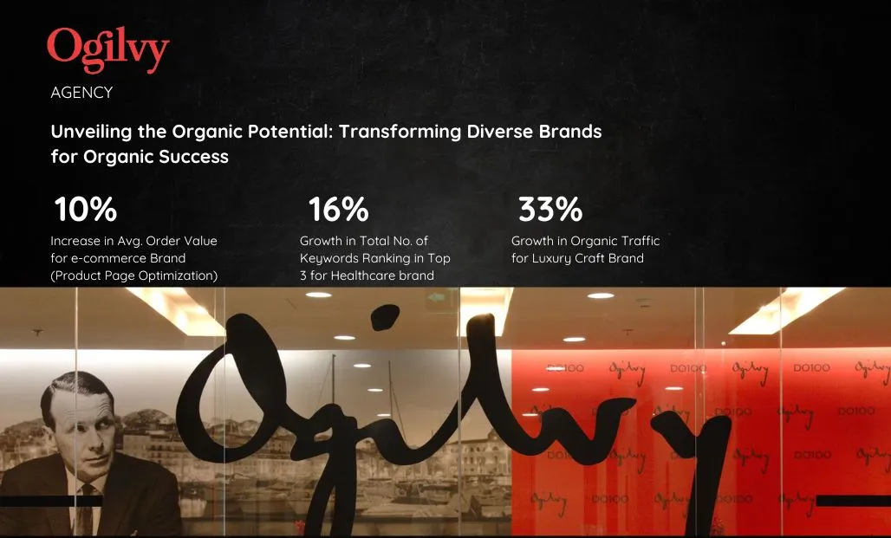

Ogilvy · E-commerce, Healthcare, Luxury
Unveiling the Organic Potential: Transforming Diverse Brands for Organic Success
10%
Increase in avg. order value — e-commerce brand (product page optimisation)
16%
Growth in total keywords ranking in top 3 — healthcare brand
33%
Growth in organic traffic — luxury craft brand